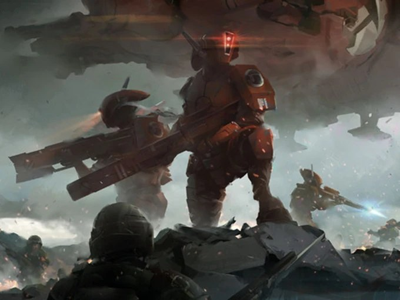

Farsight Enclaves
| Farsight Enclaves | |
|---|---|
 Symbol of the Farsight Enclaves Artwork © Games Workshop | |
| Founded | c. 760.M41[a] |
| Founder and ruler | Shas'o Vior'la Shovah Kais Mont'yr (Commander Farsight) |
| Capital | Vior'los |
| Worlds | Vior'los, Lub'grahl, Salash'hei, Gue'vesa'rio, Tinek'la and others |
| Location | Beyond the Damocles Gulf, Eastern Fringe, Ultima Segmentum |
| Peoples | T'au of all castes except the Ethereal; Kroot; Gue'vesa |
| Colours | Dark red and bone white |
| Notable battles | Damocles Gulf Crusade (742–745.M41); Arthas Moloch; defence against Hive Fleet Kraken (997.M41); war with Nazdreg's Waaagh! (Era Indomitus) |
The Farsight Enclaves are a group of fortified T'au worlds on the far side of the Damocles Gulf, on the Eastern Fringe of the galaxy, which are independent of the T'au Empire and its Ethereal caste. They are ruled by the Fire Caste commander Shas'o Vior'la Shovah Kais Mont'yr, called O'Shovah by the T'au and Commander Farsight by the Imperium, who broke away from the empire after the Damocles Gulf Crusade of 742–745.M41. The T'au Empire calls the region the Forbidden Zone and bans all contact with it.[1]
The Enclaves are among the most heavily defended regions of the Eastern Fringe. A ring of orbital fortresses blocks every approach, and few probes sent by the T'au Empire have returned. Within lie built-up worlds with large T'au populations, human defectors and Kroot kindreds, who live by a version of the Greater Good without the Ethereals. The Enclaves have fought the Orks, the Tyranids, the forces of Chaos and the Imperium.[1]
History
[edit]Commander Farsight
[edit]O'Shovah was born on the sept world Vior'la and trained under the master strategist Puretide. He made his name in the Arkunasha War against the Orks, in which he earned the name Farsight. He then fought in the Damocles Gulf Crusade, where his cadres and those of his rival Commander Shadowsun held the Imperial assault on the sept world Dal'yth in 744–745.M41.[1]
The Farsight Expedition
[edit]After the crusade, the Ethereals sent Farsight across the Damocles Gulf to recover lost colonies and fight the Orks there. This Farsight Expedition, a coalition of warriors from Vior'la, Sa'cea, T'au'n and other septs, retook much of the lost territory. On the deserted artefact world Arthas Moloch, the expedition was attacked by daemons, and the Ethereals with it were killed. Farsight came away with a sword called the Dawn Blade. Afterwards he refused orders to return. He fortified the worlds he had taken and founded the Enclaves in about 760.M41.[1]
What happened at Arthas Moloch is disputed. Some Ordo Xenos savants believe that Farsight learned there that the Ethereals' control over their people is not what it seems. Others believe that the Dawn Blade, which may be a daemon weapon, has corrupted him. Farsight has lived far longer than any T'au should, and the Inquisition suspects the blade.[1][2]
Later wars
[edit]In 997.M41 a splinter fleet of Hive Fleet Kraken entered the Enclaves. Farsight led a spearhead of eighty Crisis battlesuit teams against it and drove it back. After the opening of the Great Rift in 999.M41, the Enclaves were besieged by the Bad Moons Waaagh! of the Warlord Nazdreg Ug Urdgrub. In the Era Indomitus, reports reach the Imperium of Enclave warriors appearing within the T'au Empire, and of occasions when the two have fought the same enemy, but the Ethereals still forbid any contact.[1][3]
Worlds
[edit]| World | Description |
|---|---|
| Vior'los | Capital and seat of Farsight; a volcanic world whose heat powers its defences |
| Lub'grahl | Earth Caste world of tunnels, laboratories and prototype works |
| Salash'hei | A group of floating spheres of liquid around the star Emon'hai |
| Gue'vesa'rio | Home of the Enclaves' human population |
| Tinek'la | A crystal world sheared into a perfect polygon by the Earth Caste |
Military
[edit]The Enclaves' forces are made up mostly of the Fire Caste, and they prefer close assault and the battlesuit over the long-range firepower usual in the T'au Empire. Their wargear is often older than that of the empire, but some Enclave forces have been seen with T'au prototypes, which suggests sympathisers or spies within the empire. Farsight is guarded by a cadre of battlesuit commanders known as the Eight.[1]

Timeline
[edit]| Date | Event |
|---|---|
| 742–745.M41 | The Damocles Gulf Crusade; Farsight at Dal'yth |
| c. 750s.M41 (estimated) | The Farsight Expedition; the battle of Arthas Moloch |
| c. 760.M41 | Farsight founds the Enclaves |
| 997.M41 | Kraken splinter fleet repelled |
| Era Indomitus (from 999.M41) | War with Nazdreg's Waaagh! |
See also
[edit]
Notes
[edit]- ^ The Enclaves were founded over several years after the Farsight Expedition broke from the T'au Empire. The year given is the Ordo Xenos estimate for their establishment.
References
[edit]- ^ a b c d e f g Codex: Orks (8th Edition), pg. 30. Games Workshop. Codex: Tau Empire (6th Edition), pp. 29, 57. Games Workshop.
- ^ Codex: Tau Empire (7th Edition), "The Farsight Rebellion". Games Workshop. Farsight Enclaves - A Codex: Tau Empire Supplement (6th Edition). Games Workshop.
- ^ Codex: Tau Empire (4th Edition), pp. 10, 13-14. Games Workshop. Codex: Tau (3rd Edition), pp. 50-51. Games Workshop.